What you get
The whole desktop
A bar, panels, notifications and a launcher, plus a dock or a taskbar when you want one. Every shortcut is listed on one key.
One Settings app for everything
Displays, the bar, themes, timers, AI models and every smart feature, on searchable pages. No config files to edit by hand.
Eleven themes
Each one restyles the whole desktop at once: the bar, windows, notifications, wallpaper and sounds.
Smart features that stay private
An assistant, voice typing, spoken replies, background tasks and a nightly health checkup, all running on your machine. The ones that use the camera ship turned off.
Railguard against freezes
Watches memory and graphics memory, and steps in before a runaway program locks up the whole machine.
A better file manager
Right-click in Files to open a terminal or an editor, set a wallpaper, copy a path, see each folder's Git status, or ask the local model about a file.
Themes
One click in Settings restyles the bar, windows, terminal, notifications, wallpaper and sounds together.
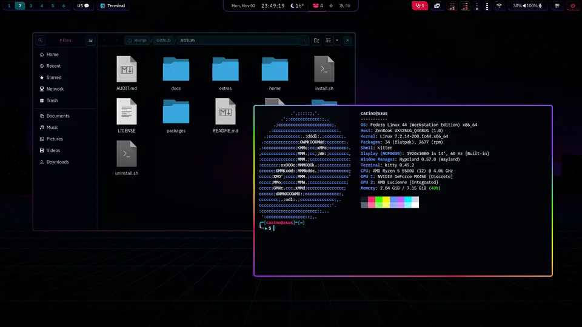
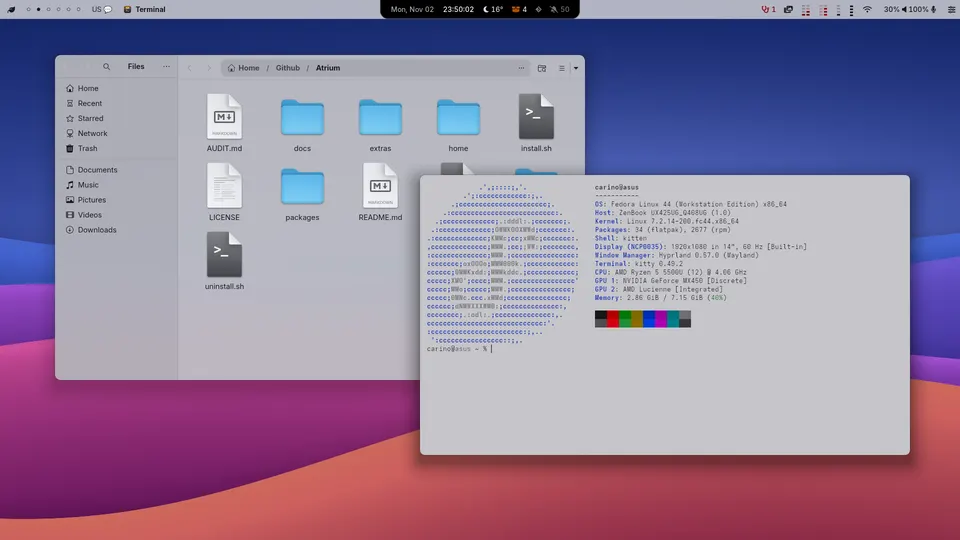
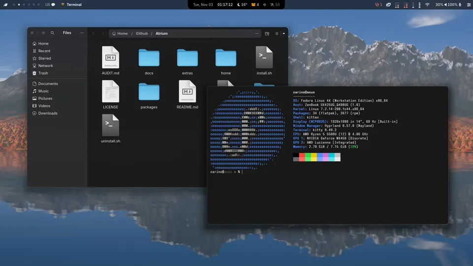
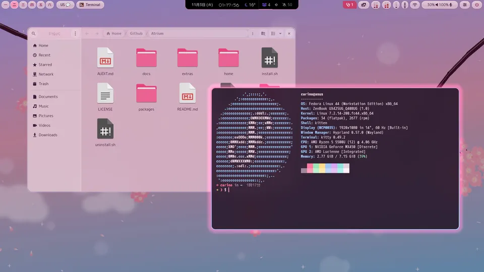
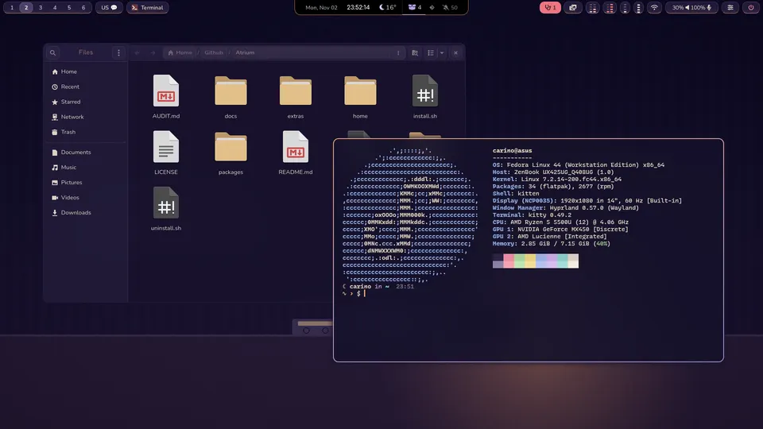
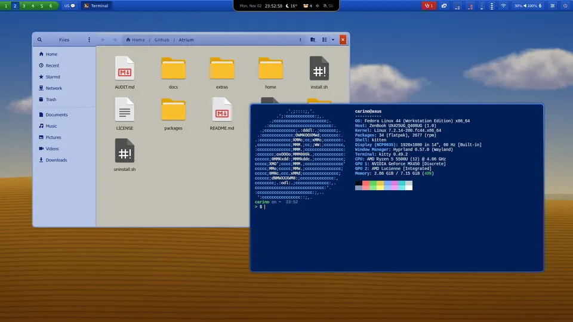
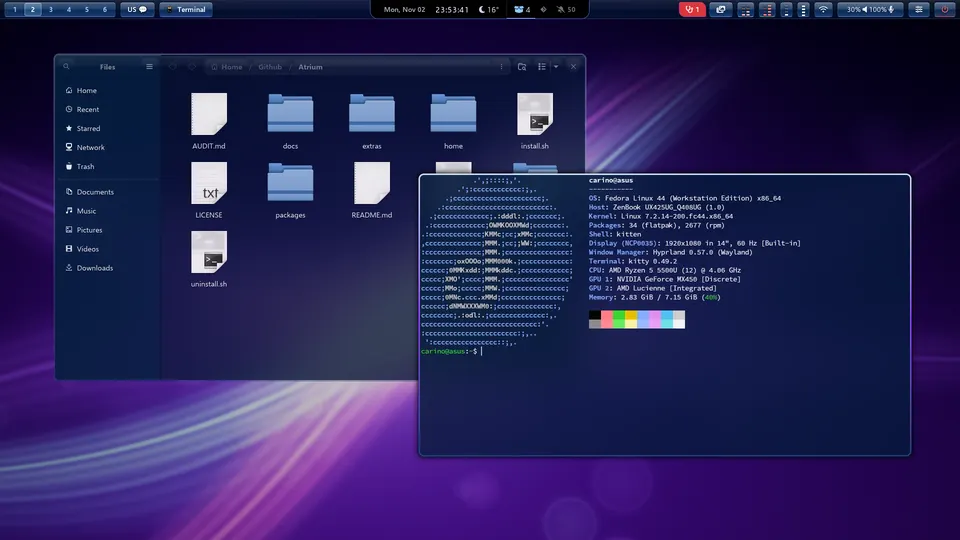
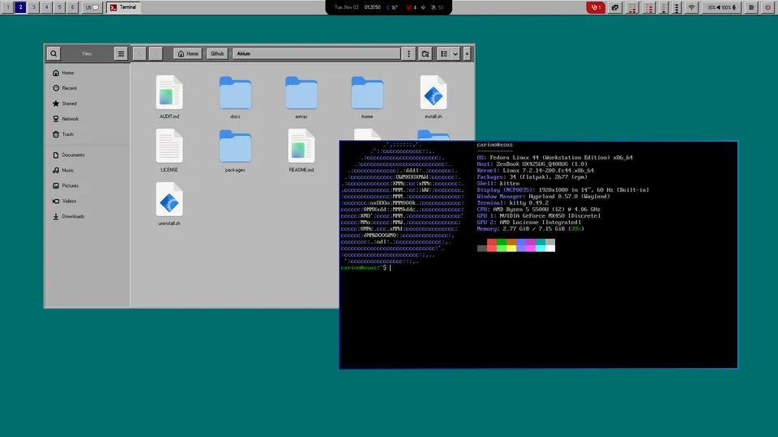
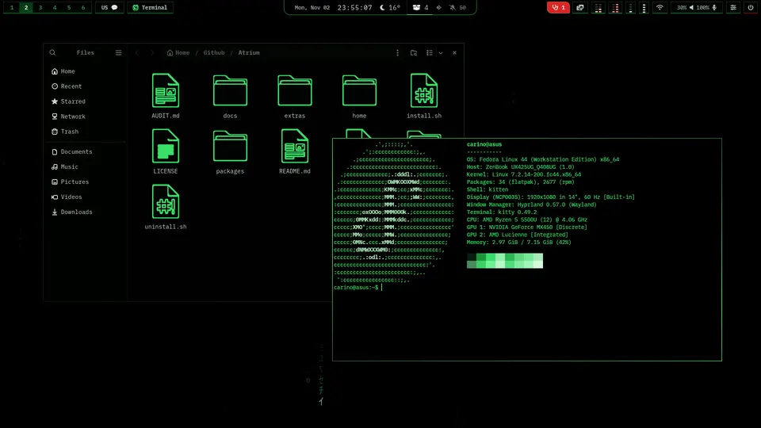
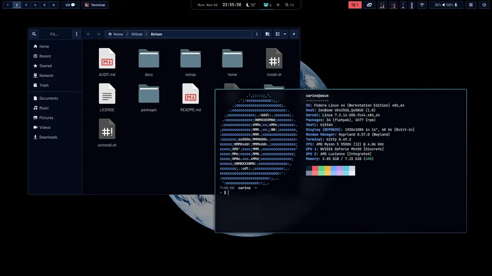
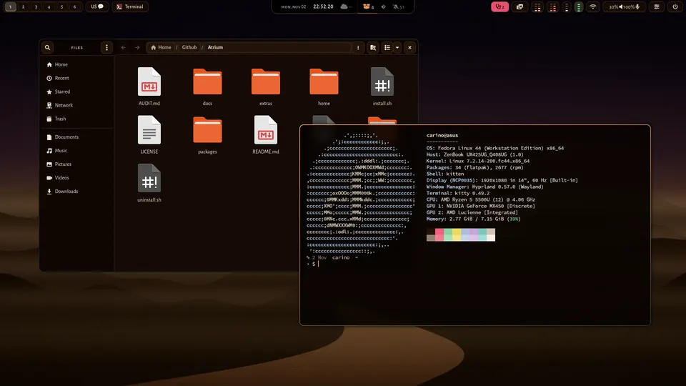
Screenshots from a 1920×1080 laptop, in each of the three layouts: the top bar alone, the top bar with the dock, or the taskbar without a top bar.
Install
-
Get it and run the installer
$ git clone https://github.com/MiguelCarino/Atrium ~/Atrium && ~/Atrium/install.shIt asks before each optional step. Anything of yours it would replace is copied to a dated backup first. Your old desktop (GNOME, KDE Plasma, COSMIC) stays next to Hyprland unless you choose to remove it.
-
Log out and pick Hyprland
Choose “Hyprland (uwsm-managed)” at the login screen. A short welcome helps you pick a theme, check your screens and microphone, and turn the smart features on or off.
-
Changed your mind?
$ ~/Atrium/uninstall.sh --dry-runShows what it would put back. Run it without --dry-run to restore your backups; Atrium's own files are moved aside, not deleted.
Setting up a whole machine? Carino Setup installs Atrium as its “carino-hyprland” choice, together with the drivers and codecs. Open Carino Setup
What it needs
| System | Fedora 44 or newer (Workstation, KDE Plasma, COSMIC or a minimal install), and a user that may use sudo. The atomic editions are not supported. |
| Disk | About 6 GB, plus 2 to 5 GB for the smart features' models. |
| Memory | 8 GB; 16 GB or more for local AI models. |
| Graphics | Any card Hyprland runs on: NVIDIA, AMD or Intel. The installer adds only what your card needs. |
| Optional | A webcam, a microphone, a phone with KDE Connect. Each feature that uses one stays off until you turn it on. |
First steps
- SUPER + I
- Settings: every page, searchable.
- SUPER + CTRL + I
- Smart desktop: every smart feature, and what may use your camera, microphone, screen and clipboard.
- SUPER + F1
- Every shortcut.